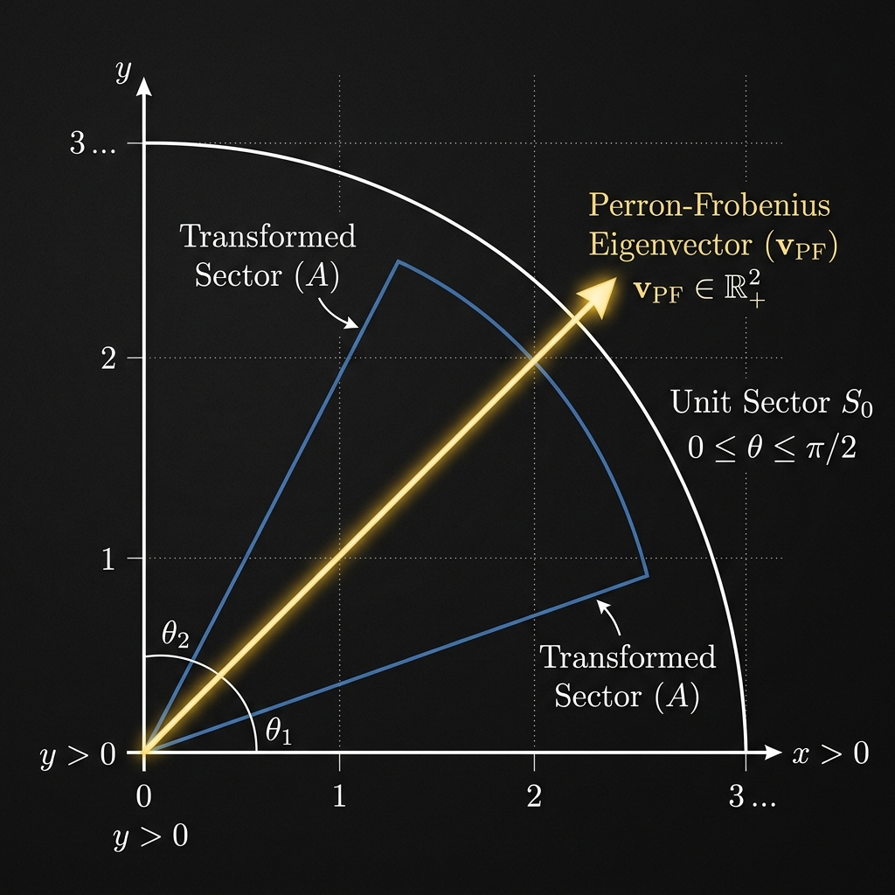

Perron-Frobenius Theorem

Mathematical Exposition
The Perron-Frobenius Theorem is a cornerstone of Linear Algebra, with massive applications in probability (Markov chains), economics, and network science (PageRank). It characterizes the eigenvalues and eigenvectors of real square matrices with non-negative entries.
Specifically, let $A$ be a real $n \times n$ matrix with non-negative entries ($A_{ij} \ge 0$). We say $A$ is irreducible if its associated directed graph is strongly connected—meaning for any pair of indices $(i, j)$, there exists a path of positive entries connecting them ($A^k_{ij} > 0$ for some $k \ge 1$).
For such an irreducible non-negative matrix $A$, the Perron-Frobenius Theorem asserts that:
- The spectral radius $\rho(A)$ (the supremum of the absolute values of the eigenvalues of $A$) is itself a real eigenvalue of $A$.
- There exists a corresponding eigenvector $v$ with **strictly positive** entries ($v_i > 0$ for all $i$) such that: $$A v = \rho(A) v$$
- The eigenvalue $\rho(A)$ is simple, and any other non-negative eigenvector of $A$ is a scalar multiple of $v$.
Collatz-Wielandt Formula
A key tool in the analysis of the spectral radius of non-negative matrices is the Collatz-Wielandt characterization. For any non-negative vector $x \ge 0$ ($x \neq 0$), let $f(x) = \min_{x_i > 0} \frac{(Ax)_i}{x_i}$. Then the spectral radius satisfies:
$$\rho(A) = \sup_{x \ge 0, x \neq 0} f(x)$$In our formalization, we prove a strict version: if $A x > \rho x$ componentwise for a positive vector $x$, then the spectral radius must be strictly greater than $\rho$. This serves as the key bound linking complex eigenvalues to the real spectral radius.
Lean 4 Formalization
In Lean 4, the theorem is formalized in the module Submission. The main theorem statement is:
theorem irreducible_nonnegative_matrix_has_positive_eigenvector_at_spectralRadius
{n : Type*} [Fintype n] [DecidableEq n] [Nonempty n]
(A : Matrix n n ℝ) (hA : A.IsIrreducible) :
∃ v : n → ℝ,
Module.End.HasEigenvector (Matrix.toLin' A) (spectralRadius ℝ A).toReal v ∧
(∀ i, 0 < v i)The proof combines complex spectral radius existence, support-growth lemmas via graph connectivity (posSupport_strictly_increasing), the Collatz-Wielandt principle, and operator norm bounding under complexification.
import Mathlib
open Matrix
open scoped NNReal Matrix Matrix.Norms.Operator ENNReal
namespace Submission
variable {n : Type*} [Fintype n] [DecidableEq n] [Nonempty n]
noncomputable def compNorm (w : n → ℂ) : n → ℝ := fun i => ‖w i‖
noncomputable def matrixToCLM (A : Matrix n n ℂ) : (n → ℂ) →L[ℂ] (n → ℂ) :=
LinearMap.toContinuousLinearMap (Matrix.toLin' A)
def matrix_pow (A : Matrix n n ℝ) (k : ℕ) : Matrix n n ℝ := A ^ k
lemma exists_complex_eigenvector_eq_spectralRadius (A : Matrix n n ℝ) :
∃ (μ : ℂ) (w : n → ℂ), w ≠ 0 ∧ (A.map Complex.ofReal).mulVec w = μ • w ∧
‖μ‖ = (spectralRadius ℂ (matrixToCLM (A.map Complex.ofReal))).toReal := by
let T := matrixToCLM (A.map Complex.ofReal)
have h_nonempty : (spectrum ℂ T).Nonempty := spectrum.nonempty T
have h_exist := spectrum.exists_nnnorm_eq_spectralRadius_of_nonempty h_nonempty
obtain ⟨μ, hμ_spec, hμ_norm⟩ := h_exist
have h_norm' : ‖μ‖ = (spectralRadius ℂ T).toReal := by
rw [← hμ_norm]
simp
have h_eig : ∃ w, w ≠ 0 ∧ (A.map Complex.ofReal).mulVec w = μ • w := by
let S' : (n → ℂ) →L[ℂ] (n → ℂ) := μ • (1 : (n → ℂ) →L[ℂ] (n → ℂ)) - T
have h_not_unit : ¬ IsUnit S' := hμ_spec
have h_not_injective : ¬ Function.Injective S' := by
intro h_inj
apply h_not_unit
rw [ContinuousLinearMap.isUnit_iff_bijective]
refine ⟨h_inj, ?_⟩
haveI : FiniteDimensional ℂ (n → ℂ) := Module.Basis.finiteDimensional_of_finite (Pi.basisFun ℂ n)
exact LinearMap.surjective_of_injective (f := S'.toLinearMap) h_inj
have h_ker : S'.toLinearMap.ker ≠ ⊥ := by
contrapose! h_not_injective
exact LinearMap.ker_eq_bot.mp h_not_injective
obtain ⟨w, hw_mem, hw_nz⟩ := Submodule.exists_mem_ne_zero_of_ne_bot h_ker
use w, hw_nz
have h_zero : S'.toLinearMap w = 0 := hw_mem
simp [S', T, matrixToCLM] at h_zero
rw [sub_eq_zero] at h_zero
exact h_zero.symm
obtain ⟨w, hw1, hw2⟩ := h_eig
exact ⟨μ, w, hw1, hw2, h_norm'⟩
def posSupport (v : n → ℝ) : Finset n :=
Finset.univ.filter (fun i => 0 < v i)
omit [DecidableEq n] [Nonempty n] in
lemma posSupport_nonempty_of_nz {v : n → ℝ} (hv : ∀ i, 0 ≤ v i) (hnz : v ≠ 0) :
(posSupport v).Nonempty := by
rw [Finset.nonempty_iff_ne_empty]
intro h_empty
apply hnz
ext i
rw [Pi.zero_apply]
have : ¬ (0 < v i) := by
have h_not_mem : i ∉ posSupport v := by
rw [h_empty]
simp
rw [posSupport, Finset.mem_filter] at h_not_mem
simp only [Finset.mem_univ, true_and] at h_not_mem
exact h_not_mem
linarith [hv i]
omit [DecidableEq n] [Nonempty n] in
lemma posSupport_step {A : Matrix n n ℝ} (hA_nonneg : ∀ i j, 0 ≤ A i j)
(v : n → ℝ) (hv : ∀ i, 0 ≤ v i) :
posSupport v ⊆ posSupport (A.mulVec v + v) := by
intro i hi
rw [posSupport, Finset.mem_filter] at hi ⊢
constructor; exact Finset.mem_univ i
have h_mul : 0 ≤ A.mulVec v i := by
rw [mulVec, dotProduct]
exact Finset.sum_nonneg fun j _ => mul_nonneg (hA_nonneg i j) (hv j)
rw [Pi.add_apply]
linarith [hi.2]
private lemma path_crosses_boundary {V : Type*} [Fintype V] [Quiver V]
{S : Finset V} {a b : V} (p : Quiver.Path a b)
(hp : 0 < p.length) (ha : a ∉ S) (hb : b ∈ S) :
∃ x ∉ S, ∃ y ∈ S, Nonempty (x ⟶ y) := by
induction p with
| nil =>
exact False.elim (lt_irrefl 0 hp)
| cons p' e' ih =>
rename_i mid_v end_v
by_cases hmid : mid_v ∈ S
· cases p' with
| nil => exact absurd hmid ha
| cons p'' e'' =>
have hlen : 0 < (Quiver.Path.cons p'' e'').length := by
change 0 < p''.length + 1
omega
exact ih hlen hmid
· exact ⟨mid_v, hmid, end_v, hb, ⟨e'⟩⟩
lemma exists_edge_from_compl_to_set {V : Type*} [Fintype V] [Quiver V]
(h_conn : Quiver.IsSStronglyConnected V)
(S : Finset V) (hS_ne : S.Nonempty) (hS_univ : S ≠ Finset.univ) :
∃ i ∉ S, ∃ j ∈ S, Nonempty (i ⟶ j) := by
obtain ⟨j, hjS⟩ := hS_ne
obtain ⟨i, hiS⟩ : ∃ i, i ∉ S := by
contrapose! hS_univ; ext i; simp [hS_univ]
obtain ⟨p, hp_len⟩ := h_conn i j
exact path_crosses_boundary p hp_len hiS hjS
omit [DecidableEq n] [Nonempty n] in
lemma posSupport_strictly_increasing {A : Matrix n n ℝ} (hA : A.IsIrreducible)
{v : n → ℝ} (hv : ∀ i, 0 ≤ v i) (hnz : v ≠ 0) (hn_full : posSupport v ≠ Finset.univ) :
posSupport v ⊂ posSupport (A.mulVec v + v) := by
let S := posSupport v
have hS_ne : S.Nonempty := posSupport_nonempty_of_nz hv hnz
letI : Quiver n := toQuiver A
obtain ⟨i, hiS, j, hjS, ⟨e⟩⟩ := exists_edge_from_compl_to_set hA.connected S hS_ne hn_full
have h_subset := posSupport_step hA.nonneg v hv
have hjS' : 0 < v j := by
change j ∈ posSupport v at hjS
rw [posSupport, Finset.mem_filter] at hjS
exact hjS.2
have hi_new : i ∈ posSupport (A.mulVec v + v) := by
rw [posSupport, Finset.mem_filter]
refine ⟨Finset.mem_univ i, ?_⟩
have h_mul : 0 < A.mulVec v i := by
rw [mulVec, dotProduct]; apply Finset.sum_pos'
· intro k _; exact mul_nonneg (hA.nonneg i k) (hv k)
· exact ⟨j, Finset.mem_univ j, mul_pos e.down hjS'⟩
show 0 < (A.mulVec v + v) i
rw [Pi.add_apply]; linarith [hv i]
have h_ne : posSupport v ≠ posSupport (A.mulVec v + v) := by
intro heq; rw [← heq] at hi_new; exact hiS hi_new
exact Finset.ssubset_iff_subset_ne.mpr ⟨h_subset, h_ne⟩
omit [DecidableEq n] [Nonempty n] in
lemma isIrreducible_eigenvector_pos {A : Matrix n n ℝ} (hA : A.IsIrreducible)
{v : n → ℝ} (hv : ∀ i, 0 ≤ v i) (hv_nz : v ≠ 0)
{la : ℝ} (h_eigen : A.mulVec v = la • v) :
∀ i, 0 < v i := by
have h_la_nonneg : 0 ≤ la := by
obtain ⟨i, hi⟩ := posSupport_nonempty_of_nz hv hv_nz
rw [posSupport, Finset.mem_filter] at hi
have h1 : (A.mulVec v) i = la * v i := by rw [h_eigen]; rfl
have h2 : 0 ≤ A.mulVec v i := by
rw [mulVec, dotProduct]; exact Finset.sum_nonneg fun j _ => mul_nonneg (hA.nonneg i j) (hv j)
rw [h1] at h2; exact nonneg_of_mul_nonneg_left h2 hi.2
by_contra h
simp only [not_forall, not_lt] at h
obtain ⟨bad, hbad⟩ := h
have hbad_eq : v bad = 0 := le_antisymm hbad (hv bad)
have h_support_not_full : posSupport v ≠ Finset.univ := by
intro heq
have : bad ∈ posSupport v := heq ▸ Finset.mem_univ bad
rw [posSupport, Finset.mem_filter] at this
linarith [this.2]
have h_ssubset := posSupport_strictly_increasing hA hv hv_nz h_support_not_full
have h_eq : posSupport (la • v + v) = posSupport v := by
ext i; simp only [posSupport, Finset.mem_filter, Finset.mem_univ, true_and, Pi.add_apply,
Pi.smul_apply, smul_eq_mul]
constructor
· intro h_pos
have h1 : (la + 1) * v i > 0 := by linarith [Pi.add_apply (la • v) v i, Pi.smul_apply la v i]
have h2 : 0 < la + 1 := by linarith
exact (mul_pos_iff.mp h1).elim (fun h => h.2) (fun h => absurd h.1 (not_lt.mpr h2.le))
· intro h_pos
have : la * v i + v i = (la + 1) * v i := by ring
linarith [mul_pos (by linarith : (0 : ℝ) < la + 1) h_pos]
rw [h_eigen, h_eq] at h_ssubset
exact h_ssubset.ne rfl
omit [DecidableEq n] [Nonempty n] in
lemma complex_eigenvector_abs_ge {A : Matrix n n ℝ} (hA : ∀ i j, 0 ≤ A i j)
{w : n → ℂ} {μ : ℂ} (h_eigen : (A.map (Complex.ofReal)).mulVec w = μ • w) :
∀ i, ‖μ‖ * ‖w i‖ ≤ (A.mulVec (fun j => ‖w j‖)) i := by
intro i
have h1 : ‖(A.map (Complex.ofReal)).mulVec w i‖ = ‖μ‖ * ‖w i‖ := by
rw [show (A.map (Complex.ofReal)).mulVec w i = (μ • w) i from by rw [h_eigen],
Pi.smul_apply, norm_smul]
rw [← h1, mulVec, dotProduct]
apply le_trans (norm_sum_le _ _)
apply Finset.sum_le_sum; intro j _
rw [Matrix.map_apply, norm_mul]
exact mul_le_mul_of_nonneg_right (by rw [Complex.norm_real]; exact (Real.norm_of_nonneg (hA i j)).le)
(norm_nonneg _)
omit [Nonempty n] in
lemma pow_entry_nonneg {A : Matrix n n ℝ} (hA : ∀ i j, 0 ≤ A i j)
(k : ℕ) (i j : n) : 0 ≤ (A ^ k) i j := by
induction k generalizing i j with
| zero => simp [pow_zero, one_apply]; split_ifs <;> linarith
| succ k ih =>
rw [pow_succ, mul_apply]
exact Finset.sum_nonneg fun l _ => mul_nonneg (ih i l) (hA l j)
omit [DecidableEq n] [Nonempty n] in
lemma nonneg_mulVec_mono {A : Matrix n n ℝ} (hA : ∀ i j, 0 ≤ A i j)
{u v : n → ℝ} (h_le : ∀ i, v i ≤ u i) :
∀ i, A.mulVec v i ≤ A.mulVec u i := by
intro i; rw [mulVec, dotProduct, mulVec, dotProduct]
exact Finset.sum_le_sum fun j _ => mul_le_mul_of_nonneg_left (h_le j) (hA i j)
omit [Nonempty n] in
lemma iterate_add_one_full_support {A : Matrix n n ℝ} (hA : A.IsIrreducible)
{v : n → ℝ} (hv : ∀ i, 0 ≤ v i) (hv_nz : v ≠ 0) :
∃ N : ℕ, ∀ i, 0 < ((1 + A) ^ N).mulVec v i := by
have hI_A_nonneg : ∀ i j, 0 ≤ (1 + A) i j := by
intro i j; simp [add_apply, one_apply]
split_ifs <;> linarith [hA.nonneg i j]
let vk (k : ℕ) : n → ℝ := ((1 + A) ^ k).mulVec v
have h_vk_nonneg : ∀ k i, 0 ≤ vk k i := by
intro k
induction k with
| zero =>
simp only [vk, pow_zero, one_mulVec]
exact hv
| succ k ih =>
have : vk (k + 1) = A.mulVec (vk k) + vk k := by
dsimp [vk]; rw [pow_succ', ← mulVec_mulVec, add_mulVec, one_mulVec, add_comm]
rw [this]
intro i
have h_mul : 0 ≤ A.mulVec (vk k) i := by
rw [mulVec, dotProduct]
exact Finset.sum_nonneg fun j _ => mul_nonneg (hA.nonneg i j) (ih j)
rw [Pi.add_apply]
linarith [ih i]
have h_vk_nz : ∀ k, vk k ≠ 0 := by
intro k
induction k with
| zero =>
simp only [vk, pow_zero, one_mulVec]
exact hv_nz
| succ k ih =>
intro h_zero
have h_step : posSupport (vk k) ⊆ posSupport (vk (k + 1)) := by
have eq1 : vk (k + 1) = A.mulVec (vk k) + vk k := by
dsimp [vk]; rw [pow_succ', ← mulVec_mulVec, add_mulVec, one_mulVec, add_comm]
rw [eq1]
exact posSupport_step hA.nonneg (vk k) (h_vk_nonneg k)
have h_empty : posSupport (vk (k + 1)) = ∅ := by
ext i
rw [posSupport, Finset.mem_filter]
have : ¬ 0 < vk (k + 1) i := by
rw [h_zero, Pi.zero_apply]
linarith
simp [this]
rw [h_empty] at h_step
have h_empty_k : posSupport (vk k) = ∅ := Finset.subset_empty.mp h_step
have h_nonempty_k := posSupport_nonempty_of_nz (h_vk_nonneg k) ih
exact Finset.nonempty_iff_ne_empty.mp h_nonempty_k h_empty_k
have h_bound : ∀ k : ℕ, posSupport (vk k) = Finset.univ ∨
k < (posSupport (vk k)).card := by
intro k
induction k with
| zero =>
by_cases h_univ : posSupport (vk 0) = Finset.univ
· exact Or.inl h_univ
· right
have h_nonempty := posSupport_nonempty_of_nz (h_vk_nonneg 0) (h_vk_nz 0)
have h_pos : 0 < (posSupport (vk 0)).card := Finset.card_pos.mpr h_nonempty
omega
| succ k ih =>
by_cases h_univ_k : posSupport (vk k) = Finset.univ
· left
have h_step : posSupport (vk k) ⊆ posSupport (vk (k + 1)) := by
have eq1 : vk (k + 1) = A.mulVec (vk k) + vk k := by
dsimp [vk]; rw [pow_succ', ← mulVec_mulVec, add_mulVec, one_mulVec, add_comm]
rw [eq1]
exact posSupport_step hA.nonneg (vk k) (h_vk_nonneg k)
rw [h_univ_k] at h_step
exact Finset.univ_subset_iff.mp h_step
· by_cases h_univ_k1 : posSupport (vk (k + 1)) = Finset.univ
· exact Or.inl h_univ_k1
· right
have eq1 : vk (k + 1) = A.mulVec (vk k) + vk k := by
dsimp [vk]; rw [pow_succ', ← mulVec_mulVec, add_mulVec, one_mulVec, add_comm]
have h_strict : posSupport (vk k) ⊂ posSupport (vk (k + 1)) := by
rw [eq1]
exact posSupport_strictly_increasing hA (h_vk_nonneg k) (h_vk_nz k) h_univ_k
have h_card_strict : (posSupport (vk k)).card < (posSupport (vk (k + 1))).card :=
Finset.card_lt_card h_strict
have hk_lt : k < (posSupport (vk k)).card := by
cases ih with
| inl h => exact absurd h h_univ_k
| inr h => exact h
omega
use Fintype.card n
intro i
have hk := h_bound (Fintype.card n)
have h_univ : posSupport (vk (Fintype.card n)) = Finset.univ := by
cases hk with
| inl h => exact h
| inr h_lt =>
have h_le : (posSupport (vk (Fintype.card n))).card ≤ Fintype.card n :=
Finset.card_le_univ _
omega
have hi : i ∈ posSupport (vk (Fintype.card n)) := by
rw [h_univ]
exact Finset.mem_univ i
rw [posSupport, Finset.mem_filter] at hi
exact hi.2
section CollatzWielandt
omit [DecidableEq n] [Nonempty n] in
lemma compNorm_mulVec_le {A : Matrix n n ℝ} (hA : ∀ i j, 0 ≤ A i j) (w : n → ℂ) :
∀ i, compNorm ((A.map Complex.ofReal).mulVec w) i ≤ A.mulVec (compNorm w) i := by
intro i
dsimp [compNorm, mulVec, dotProduct]
have h_le := norm_sum_le Finset.univ (fun j => (A.map Complex.ofReal i j) * w j)
have h_eq : Finset.univ.sum (fun j => ‖(A.map Complex.ofReal i j) * w j‖) = Finset.univ.sum (fun j => A i j * ‖w j‖) := by
apply Finset.sum_congr rfl
intro j _
rw [norm_mul]
have h1 : ‖A.map Complex.ofReal i j‖ = A i j := by
rw [Matrix.map_apply, Complex.norm_real]
exact abs_of_nonneg (hA i j)
rw [h1]
rw [h_eq] at h_le
exact h_le
omit [Nonempty n] in
lemma matrixToCLM_mul (M N : Matrix n n ℂ) :
matrixToCLM (M * N) = matrixToCLM M * matrixToCLM N := by
ext1 w
show (M * N).mulVec w = M.mulVec (N.mulVec w)
rw [Matrix.mulVec_mulVec]
omit [Nonempty n] in
lemma matrixToCLM_pow (M : Matrix n n ℂ) (k : ℕ) :
matrixToCLM (M ^ k) = matrixToCLM M ^ k := by
induction k with
| zero =>
ext1 w
show (1 : Matrix n n ℂ).mulVec w = w
rw [one_mulVec]
| succ k ih =>
rw [pow_succ, matrixToCLM_mul, ih, pow_succ]
omit [Nonempty n] in
lemma real_linftyOpNorm_le_complex_clm_nnnorm (B : Matrix n n ℝ) :
letI : NormedAddCommGroup (Matrix n n ℝ) := Matrix.linftyOpNormedAddCommGroup
letI : NormedRing (Matrix n n ℝ) := Matrix.linftyOpNormedRing
‖B‖₊ ≤ ‖matrixToCLM (B.map Complex.ofReal)‖₊ := by
letI : NormedAddCommGroup (Matrix n n ℝ) := Matrix.linftyOpNormedAddCommGroup
letI : NormedRing (Matrix n n ℝ) := Matrix.linftyOpNormedRing
let T := matrixToCLM (B.map Complex.ofReal)
rw [linfty_opNNNorm_eq_opNNNorm]
rw [← NNReal.coe_le_coe, coe_nnnorm, coe_nnnorm]
apply ContinuousLinearMap.opNorm_le_bound _ (norm_nonneg T)
intro v
let w : n → ℂ := fun i => (v i : ℂ)
have h_norm_w : ‖w‖ = ‖v‖ := by
simp only [w, Pi.norm_def]
congr 1
exact Finset.sup_congr rfl (fun i _ => by simp [Complex.nnnorm_real])
have h_Tw : T w = fun i => ((B.mulVec v) i : ℂ) := by
ext i
show (B.map Complex.ofReal).mulVec w i = ↑((B.mulVec v) i)
simp only [Matrix.mulVec, dotProduct, w, map_apply]
push_cast
rfl
have h_norm_Tw : ‖T w‖ = ‖B.mulVec v‖ := by
rw [h_Tw]
simp only [Pi.norm_def]
congr 1
exact Finset.sup_congr rfl (fun i _ => by simp [Complex.nnnorm_real])
calc ‖B.mulVec v‖ = ‖T w‖ := h_norm_Tw.symm
_ ≤ ‖T‖ * ‖w‖ := T.le_opNorm w
_ = ‖T‖ * ‖v‖ := by rw [h_norm_w]
lemma collatz_wielandt_strict {A : Matrix n n ℝ} (hA : A.IsIrreducible)
{v : n → ℝ} (hv : ∀ i, 0 < v i) {ρ : ℝ} (hρ : 0 ≤ ρ) (h_strict : ∀ i, ρ * v i < A.mulVec v i) :
ρ < (spectralRadius ℂ (matrixToCLM (A.map Complex.ofReal))).toReal := by
let f (i : n) := (A.mulVec v i) / (v i)
let c := Finset.univ.inf' Finset.univ_nonempty f
have hc_pos : ρ < c := by
rw [Finset.lt_inf'_iff]
intro i _
exact (lt_div_iff₀ (hv i)).mpr (h_strict i)
have hc_nonneg : 0 ≤ c := hρ.trans hc_pos.le
have hc_le : ∀ i, c * v i ≤ A.mulVec v i := fun i => by
have : c ≤ f i := Finset.inf'_le f (Finset.mem_univ i)
exact (le_div_iff₀ (hv i)).mp this
have h_pow_v : ∀ k i, c ^ k * v i ≤ (A ^ k).mulVec v i := by
intro k; induction k with
| zero => intro i; simp [one_mulVec]
| succ k ih =>
intro i
rw [show A ^ (k + 1) = A ^ k * A from pow_succ A k, ← Matrix.mulVec_mulVec,
show c ^ (k + 1) = c ^ k * c from pow_succ c k]
have h_mono : (A ^ k).mulVec (fun j => c * v j) i ≤ (A ^ k).mulVec (A.mulVec v) i :=
nonneg_mulVec_mono (pow_entry_nonneg hA.nonneg k) (fun j => hc_le j) i
have h_linear : (A ^ k).mulVec (fun j => c * v j) i = c * ((A ^ k).mulVec v i) := by
simp [mulVec, dotProduct, Finset.mul_sum]
apply Finset.sum_congr rfl; intro j _; ring
calc c ^ k * c * v i = c * (c ^ k * v i) := by ring
_ ≤ c * ((A ^ k).mulVec v i) := mul_le_mul_of_nonneg_left (ih i) hc_nonneg
_ = (A ^ k).mulVec (fun j => c * v j) i := h_linear.symm
_ ≤ (A ^ k).mulVec (A.mulVec v) i := h_mono
let T := matrixToCLM (A.map Complex.ofReal)
letI : NormedAddCommGroup (Matrix n n ℝ) := Matrix.linftyOpNormedAddCommGroup
letI : NormedRing (Matrix n n ℝ) := Matrix.linftyOpNormedRing
have h_norm_Ak : ∀ k, 1 ≤ k → c ^ k ≤ ‖A ^ k‖ := by
intro k _hk
have hv_nz : v ≠ 0 := by
intro h; have := hv (Classical.arbitrary n); rw [h, Pi.zero_apply] at this; linarith
have h_norm_v_pos : (0 : ℝ) < ‖v‖ := norm_pos_iff.mpr hv_nz
have h1 : ‖(A ^ k).mulVec v‖ ≤ ‖A ^ k‖ * ‖v‖ := linfty_opNorm_mulVec (A ^ k) v
have h2 : c ^ k * ‖v‖ ≤ ‖(A ^ k).mulVec v‖ := by
by_cases hck : c ^ k = 0
· simp [hck]
· have hck_pos : 0 < c ^ k := lt_of_le_of_ne (pow_nonneg hc_nonneg k) (Ne.symm hck)
rw [show c ^ k * ‖v‖ = ‖v‖ * c ^ k from mul_comm _ _, ← le_div_iff₀ hck_pos]
exact (pi_norm_le_iff_of_nonneg (div_nonneg (norm_nonneg _) hck_pos.le)).mpr
fun i => (le_div_iff₀ hck_pos).mpr (by rw [mul_comm]; exact h3 i)
exact le_of_mul_le_mul_right (h2.trans h1) h_norm_v_pos
have h_rho_ge : ENNReal.ofReal c ≤ spectralRadius ℂ T := by
apply ge_of_tendsto (spectrum.pow_nnnorm_pow_one_div_tendsto_nhds_spectralRadius T)
filter_upwards [Filter.eventually_ge_atTop 1] with k hk
have hk_pos : (0 : ℝ) < k := Nat.cast_pos.mpr (Nat.one_le_iff_ne_zero.mp hk |>.bot_lt)
have hk_ne : (k : ℝ) ≠ 0 := hk_pos.ne'
have h_ck : c ^ k ≤ ‖A ^ k‖ := h_norm_Ak k hk
have h_Ak_le_Tk : (‖A ^ k‖₊ : ℝ≥0∞) ≤ ↑‖T ^ k‖₊ := by
rw [ENNReal.coe_le_coe]
have h_pow_eq : T ^ k = matrixToCLM ((A ^ k).map Complex.ofReal) := by
rw [← matrixToCLM_pow]
congr 1
exact (Matrix.map_pow A (algebraMap ℝ ℂ) k).symm
rw [h_pow_eq]
exact real_linftyOpNorm_le_complex_clm_nnnorm (A ^ k)
have h_ofReal : ENNReal.ofReal (c ^ k) ≤ ↑‖T ^ k‖₊ := by
calc ENNReal.ofReal (c ^ k)
≤ (‖A ^ k‖₊ : ℝ≥0∞) := by
rw [ENNReal.ofReal_le_iff_le_toReal (ENNReal.coe_ne_top)]
simp only [ENNReal.coe_toReal]
exact h_ck
_ ≤ ↑‖T ^ k‖₊ := h_Ak_le_Tk
have h_rpow : (ENNReal.ofReal (c ^ k)) ^ ((k : ℝ)⁻¹) ≤ (↑‖T ^ k‖₊) ^ ((k : ℝ)⁻¹) :=
ENNReal.rpow_le_rpow h_ofReal (inv_nonneg.mpr hk_pos.le)
have h_lhs : (ENNReal.ofReal (c ^ k)) ^ ((k : ℝ)⁻¹) = ENNReal.ofReal c := by
rw [ENNReal.ofReal_rpow_of_nonneg (pow_nonneg hc_nonneg k) (inv_nonneg.mpr hk_pos.le)]
congr 1
rw [← Real.rpow_natCast c k, ← Real.rpow_mul hc_nonneg, mul_inv_cancel₀ hk_ne,
Real.rpow_one]
rw [h_lhs] at h_rpow
convert h_rpow using 1
congr 1; exact one_div _
have h_rho_real : spectralRadius ℂ T < ∞ :=
(spectrum.spectralRadius_le_nnnorm T).trans_lt ENNReal.coe_lt_top
have h_c_le : c ≤ (spectralRadius ℂ T).toReal := by
rw [← ENNReal.toReal_ofReal hc_nonneg]
exact ENNReal.toReal_mono h_rho_real.ne h_rho_ge
exact hc_pos.trans_le h_c_le
end CollatzWielandt
lemma mulVec_commute_apply {n : Type*} [Fintype n] (A B : Matrix n n ℝ) (h : Commute A B) (u : n → ℝ) :
A.mulVec (B.mulVec u) = B.mulVec (A.mulVec u) := by
rw [Matrix.mulVec_mulVec u A B, h.eq, ← Matrix.mulVec_mulVec u B A]
lemma one_add_A_pow_commute {n : Type*} [Fintype n] [DecidableEq n] (A : Matrix n n ℝ) (m : ℕ) :
Commute A (matrix_pow (1 + A) m) := by
have h1 : Commute A (1 + A) := by
dsimp [Commute, SemiconjBy]
rw [mul_add, add_mul, mul_one, one_mul]
exact h1.pow_right m
omit [Nonempty n] in
lemma isUnit_iff_ne_zero_of_field {K : Type*} [Field K] (x : K) : IsUnit x ↔ x ≠ 0 :=
isUnit_iff_ne_zero
omit [Nonempty n] in
lemma real_spectralRadius_eq_complex (A : Matrix n n ℝ) (ρ_C : ℝ) (hρ_nonneg : 0 ≤ ρ_C) (u : n → ℝ) (hu_ne_zero : u ≠ 0) (h_eq : A.mulVec u = ρ_C • u)
(T : (n → ℂ) →L[ℂ] (n → ℂ))
(hT : ∀ v, T v = (A.map Complex.ofReal).mulVec v)
(h_rho : ENNReal.ofReal ρ_C = spectralRadius ℂ T) :
(spectralRadius ℝ A).toReal = ρ_C := by
have heig_u : Module.End.HasEigenvector (Matrix.toLin' A) ρ_C u :=
⟨Module.End.mem_eigenspace_iff.mpr h_eq, hu_ne_zero⟩
have h_bound : spectralRadius ℝ A ≤ ENNReal.ofReal ρ_C := by
rw [h_rho]
apply iSup₂_le
intro r hr
have hr_c : (r : ℂ) ∈ spectrum ℂ (A.map Complex.ofReal) := by
rw [spectrum.mem_iff, isUnit_iff_isUnit_det, isUnit_iff_ne_zero_of_field, Classical.not_not] at hr
rw [spectrum.mem_iff, isUnit_iff_isUnit_det, isUnit_iff_ne_zero_of_field, Classical.not_not]
have h_map : (algebraMap ℂ (Matrix n n ℂ)) (r : ℂ) - A.map Complex.ofReal = Complex.ofRealHom.mapMatrix ((algebraMap ℝ (Matrix n n ℝ)) r - A) := by
ext i j
simp only [Algebra.algebraMap_eq_smul_one, RingHom.mapMatrix_apply, map_sub, Matrix.sub_apply, Matrix.smul_apply, map_apply]
by_cases h : i = j
· subst h
simp [Matrix.one_apply_eq]
· simp [h, Matrix.one_apply_ne]
rw [h_map, ← RingHom.map_det, hr, map_zero]
have hr_c_T : (r : ℂ) ∈ spectrum ℂ T := by
have heig : Module.End.HasEigenvalue (Matrix.toLin' (A.map Complex.ofReal)) (r : ℂ) := by
apply Module.End.hasEigenvalue_iff_mem_spectrum.mpr
have h_seq : spectrum ℂ (toLin' (A.map Complex.ofReal)) = spectrum ℂ (A.map Complex.ofReal) :=
AlgEquiv.spectrum_eq (Matrix.toLinAlgEquiv (Pi.basisFun ℂ n)) (A.map Complex.ofReal)
rw [h_seq]
exact hr_c
obtain ⟨v, hv, hv_ne_zero⟩ := Submodule.exists_mem_ne_zero_of_ne_bot heig
have heig_v_eq := Module.End.mem_eigenspace_iff.mp hv
have heig_v_T : T v = (r : ℂ) • v := by
rw [hT]
exact heig_v_eq
rw [spectrum.mem_iff]
intro h_unit
have h_inv : ((algebraMap ℂ ((n → ℂ) →L[ℂ] (n → ℂ))) (r : ℂ) - T) v = 0 := by
have h_alg : (algebraMap ℂ ((n → ℂ) →L[ℂ] (n → ℂ))) (r : ℂ) v = (r : ℂ) • v := by
rw [Algebra.algebraMap_eq_smul_one]
exact ContinuousLinearMap.smul_apply _ _ _
rw [ContinuousLinearMap.sub_apply, h_alg, heig_v_T, sub_self]
rcases h_unit with ⟨unit_r, h_unit_eq⟩
have h_inv2 : unit_r.inv * ((algebraMap ℂ ((n → ℂ) →L[ℂ] (n → ℂ))) (r : ℂ) - T) = 1 := by
rw [← h_unit_eq]
exact unit_r.inv_val
have h_app : (unit_r.inv * ((algebraMap ℂ ((n → ℂ) →L[ℂ] (n → ℂ))) (r : ℂ) - T)) v = v := by
rw [h_inv2]
exact ContinuousLinearMap.one_apply v
have h_app2 : (unit_r.inv * ((algebraMap ℂ ((n → ℂ) →L[ℂ] (n → ℂ))) (r : ℂ) - T)) v = 0 := by
have h_comp : (unit_r.inv * ((algebraMap ℂ ((n → ℂ) →L[ℂ] (n → ℂ))) (r : ℂ) - T)) v = unit_r.inv (((algebraMap ℂ ((n → ℂ) →L[ℂ] (n → ℂ))) (r : ℂ) - T) v) := rfl
rw [h_comp, h_inv, map_zero]
rw [h_app2] at h_app
exact hv_ne_zero h_app.symm
have h_sup := le_iSup₂ (f := fun (z:ℂ) _ => (‖z‖₊ : ℝ≥0∞)) (r : ℂ) hr_c_T
have h_norm : (‖(r:ℂ)‖₊ : ℝ≥0∞) = ‖r‖₊ := by rw [Complex.nnnorm_real]
rwa [h_norm] at h_sup
have h_eig : Module.End.HasEigenvalue (Matrix.toLin' A) ρ_C := by
have heig_u2 : Module.End.HasEigenvector (toLin' A) ρ_C u := heig_u
have h_mem : u ∈ Module.End.eigenspace (toLin' A) ρ_C := heig_u2.1
intro h_bot
have h_bot2 : u ∈ (⊥ : Submodule ℝ (n → ℝ)) := by
exact h_bot ▸ h_mem
rw [Submodule.mem_bot] at h_bot2
exact hu_ne_zero h_bot2
have h_mem := Module.End.hasEigenvalue_iff_mem_spectrum.mp h_eig
have h_seq : spectrum ℝ (Matrix.toLin' A) = spectrum ℝ A :=
AlgEquiv.spectrum_eq (Matrix.toLinAlgEquiv (Pi.basisFun ℝ n)) A
rw [h_seq] at h_mem
have h_sup := le_iSup₂ (f := fun x _ => (‖x‖₊ : ℝ≥0∞)) ρ_C h_mem
have h_norm : (‖ρ_C‖₊ : ℝ≥0∞) = ENNReal.ofReal ρ_C := by
rw [Real.nnnorm_of_nonneg hρ_nonneg, ENNReal.ofReal_eq_coe_nnreal hρ_nonneg]
rw [h_norm] at h_sup
have h_eq_enn : spectralRadius ℝ A = ENNReal.ofReal ρ_C := le_antisymm h_bound h_sup
rw [h_eq_enn, ENNReal.toReal_ofReal hρ_nonneg]
theorem irreducible_nonnegative_matrix_has_positive_eigenvector_at_spectralRadius
{n : Type*} [Fintype n] [DecidableEq n] [Nonempty n]
(A : Matrix n n ℝ)
(hA : A.IsIrreducible) :
∃ v : n → ℝ,
Module.End.HasEigenvector (Matrix.toLin' A) (spectralRadius ℝ A).toReal v ∧
(∀ i, 0 < v i) := by
have hA_nonneg : ∀ i j, 0 ≤ A i j := hA.1
obtain ⟨μ, w, hw, h_eig, h_norm⟩ := exists_complex_eigenvector_eq_spectralRadius A
let ρ_C := (spectralRadius ℂ (matrixToCLM (A.map Complex.ofReal))).toReal
have hρ_nonneg : 0 ≤ ρ_C := ENNReal.toReal_nonneg
let u := compNorm w
have hu_nonneg : ∀ i, 0 ≤ u i := fun i => norm_nonneg (w i)
have hu_ne_zero : u ≠ 0 := by
intro h
have hw_zero : w = 0 := by
ext i
have hi : ‖w i‖ = 0 := by
calc ‖w i‖ = u i := rfl
_ = 0 := by rw [h]; rfl
exact norm_eq_zero.mp hi
exact hw hw_zero
have hu_bound : ∀ i, ρ_C * u i ≤ A.mulVec u i := by
intro i
have h1 := compNorm_mulVec_le hA_nonneg w i
have h2 : compNorm ((A.map Complex.ofReal).mulVec w) i = ‖μ‖ * u i := by
dsimp [compNorm]
rw [h_eig]
exact norm_smul μ (w i)
rw [h2, h_norm] at h1
exact h1
by_cases h_eq : A.mulVec u = ρ_C • u
· have h_rad_eq : (spectralRadius ℝ A).toReal = ρ_C := by
let T := matrixToCLM (A.map Complex.ofReal)
have hT_apply : ∀ v, T v = (A.map Complex.ofReal).mulVec v := fun v => rfl
have h_rho_real : spectralRadius ℂ T < ∞ :=
(spectrum.spectralRadius_le_nnnorm T).trans_lt ENNReal.coe_lt_top
have h_rho_eq : ENNReal.ofReal ρ_C = spectralRadius ℂ T := ENNReal.ofReal_toReal h_rho_real.ne
exact real_spectralRadius_eq_complex A ρ_C hρ_nonneg u hu_ne_zero h_eq T hT_apply h_rho_eq
have hu_pos : ∀ i, 0 < u i := isIrreducible_eigenvector_pos hA hu_nonneg hu_ne_zero h_eq
use u
constructor
· rw [Module.End.hasEigenvector_iff]
refine ⟨?_, hu_ne_zero⟩
rw [Module.End.mem_eigenspace_iff]
rw [h_rad_eq]
exact h_eq
· exact hu_pos
· let x : n → ℝ := fun i => A.mulVec u i - ρ_C * u i
have hx_nonneg : ∀ i, 0 ≤ x i := fun i => sub_nonneg.mpr (hu_bound i)
have hx_ne_zero : x ≠ 0 := by
intro h
have h_eq' : A.mulVec u = ρ_C • u := by
ext i
have h_i : x i = 0 := by rw [h]; rfl
dsimp [x] at h_i
exact sub_eq_zero.mp h_i
exact h_eq h_eq'
obtain ⟨m1, hm1⟩ := iterate_add_one_full_support hA hx_nonneg hx_ne_zero
obtain ⟨m2, hm2⟩ := iterate_add_one_full_support hA hu_nonneg hu_ne_zero
let m := m1 + m2
let v := (matrix_pow (1 + A) m).mulVec u
have h_B_nonneg : ∀ i j, 0 ≤ (1 + A) i j := by
intro i j; simp [add_apply, Matrix.one_apply]
split_ifs <;> linarith [hA.nonneg i j]
have h_B_pow_nonneg : ∀ k i j, 0 ≤ (matrix_pow (1 + A) k) i j := fun k => pow_entry_nonneg h_B_nonneg k
have h_B_diag_pos : ∀ k i, 0 < matrix_pow (1 + A) k i i := by
intro k i
induction k with
| zero => simp [matrix_pow]
| succ k ih =>
rw [matrix_pow, _root_.pow_succ, Matrix.mul_apply]
apply Finset.sum_pos'
· intro j _; exact mul_nonneg (h_B_pow_nonneg k i j) (h_B_nonneg j i)
· exact ⟨i, Finset.mem_univ i, mul_pos ih (by simp; linarith [hA.nonneg i i])⟩
have h_B_mulVec_pos {k : ℕ} {y : n → ℝ} (hy : ∀ i, 0 < y i) : ∀ i, 0 < ((matrix_pow (1 + A) k).mulVec y) i := by
intro i; rw [Matrix.mulVec, dotProduct]
apply Finset.sum_pos'
· intro j _; exact mul_nonneg (h_B_pow_nonneg k i j) (hy j).le
· exact ⟨i, Finset.mem_univ i, mul_pos (h_B_diag_pos k i) (hy i)⟩
have hv_pos : ∀ i, 0 < v i := by
dsimp [v, m, matrix_pow]
rw [pow_add, ← Matrix.mulVec_mulVec]
exact h_B_mulVec_pos hm2
have h_strict : ∀ i, ρ_C * v i < A.mulVec v i := by
intro i
have hx_def : x = A.mulVec u - ρ_C • u := rfl
have h_mx_pos : 0 < ((matrix_pow (1 + A) m).mulVec x) i := by
dsimp [m, matrix_pow]
rw [add_comm m1 m2, pow_add, ← Matrix.mulVec_mulVec]
exact h_B_mulVec_pos hm1 i
have h_comm := one_add_A_pow_commute A m
have h_swap := mulVec_commute_apply A (matrix_pow (1 + A) m) h_comm u
rw [hx_def, Matrix.mulVec_sub, Matrix.mulVec_smul, ← h_swap] at h_mx_pos
rw [Pi.sub_apply, Pi.smul_apply, smul_eq_mul] at h_mx_pos
linarith
have h_contra := collatz_wielandt_strict hA hv_pos hρ_nonneg h_strict
exact False.elim (lt_irrefl _ h_contra)
end Submission